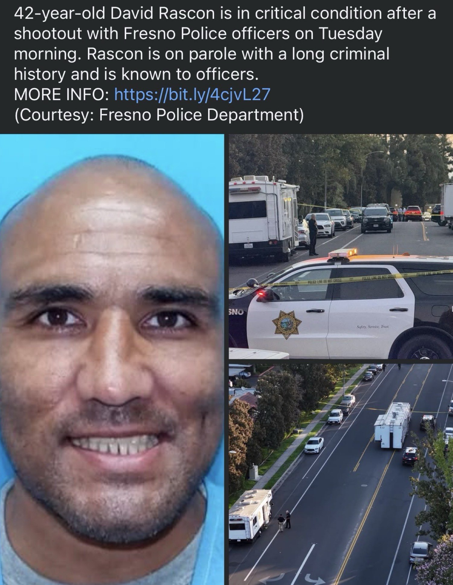
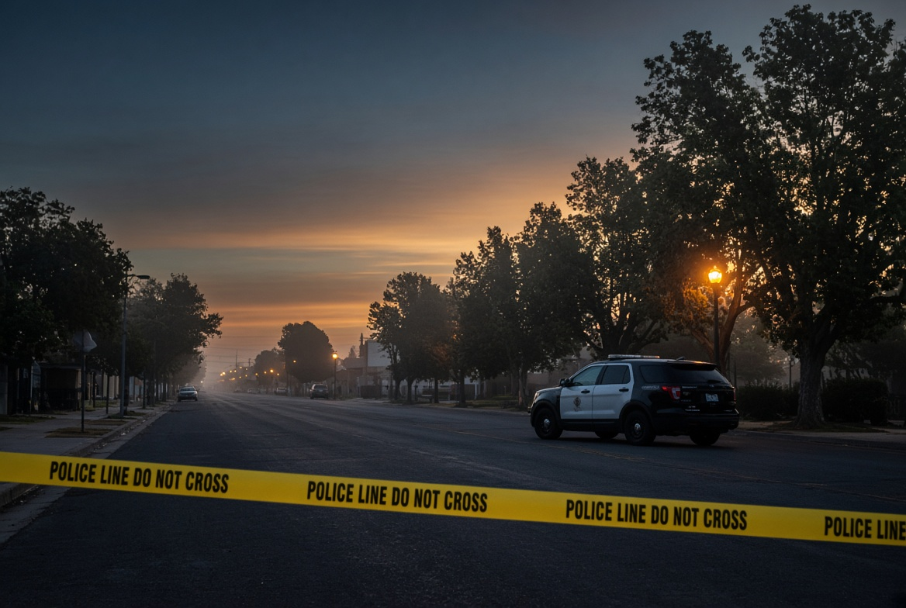

What the Record Says
Time and Trigger
About 2:45 a.m., Tuesday, Sept. 1, 2026
ShotSpotter reported a single round near Huntington and Orchard, across from Holmes Park.
Distance From the Door
About 1.3 miles
721 E La Sierra Drive to Holmes Park at 212 S First Street. Same grid. Same city.
The Man Named
David Rascon, 42, of Fresno
On parole. Chief Casto: known to police, long history of fighting officers, felony assaults on officers, long rap sheet.
The Exchange
He ran. He had a gun. He fired.
Pursuit west on Huntington. Near R Street he stopped, turned, and fired. Two officers returned fire. Neither officer was hit. Rascon was struck multiple times, taken to Community Regional, surgery, critical condition.
Sources: Fresno Police Chief Mindy Casto via ABC30, YourCentralValley / KSEE-KGPE, and The Modesto Bee / Fresno Bee update. Officers involved have about four years on the department and were placed on administrative leave. Second officer-involved shooting of 2026. Investigators were still working the original ShotSpotter round, including whether anyone else was hit before officers arrived.
The Split
Listen to the language the department used. Known to officers. Long rap sheet. History of fighting police. Felony assaults on officers. Active parole. That is not a stranger who materialized out of fog at 2:45 in the morning. That is a man already inside the system that is supposed to watch him.
Now listen to what the street had. Nothing with his name on it. No neighborhood bulletin. No photo on a porch flyer. No public ledger of violent parolees walking Huntington, First, Orchard, or the blocks that feed them. The booking smile arrives as a courtesy after the shooting, when the only remaining question is whether he lives through surgery.
Police knowledge and public knowledge are not the same file. That is the whole story. The rest is commentary.
Who Gets a Map
California already decided that some predators are too dangerous to keep private. Megan's Law puts a subset of registered sex offenders on a public website with photographs, physical descriptions, and, for some tiers, home addresses. The statute is Penal Code 290.46. The justification is simple. People who live near a listed offender have a right to know the risk on their block.
Violent parolees who are not sex offenders do not get that map. Notice of release for many violent felonies goes to law enforcement and to victims or witnesses who asked to be told. It does not go to the woman walking her dogs at dusk. It does not go to the man sleeping in a 12 by 12 room a mile and a quarter from Holmes Park. CDCR and local police can know. The block is expected to infer.
That is why the question in the original post is not naive. If officers already know the face, the prior assaults on peace officers, and the parole status, the remaining secrecy is not operational necessity. It is a choice about whose privacy outranks whose safety. The state will publish a child molester by ZIP code. It will not publish a parolee with a documented habit of fighting cops until he shoots at two of them on Huntington.
Do not confuse this with a demand to dox every person who ever caught a case. Court files exist. Mugshots leak. Gossip is cheap and often wrong. The demand is narrower. If a person is on active parole, has a record of violent assault on officers, and is assessed as a current risk on the same streets the rest of us use, the neighborhood is a party to that risk. Parties get notice.

A Who's Who Is Not Gossip
Every functioning street already keeps a private legend. People know which porch stays lit. Which car never moves. Which man walks the same loop at 2 a.m. with his hand in his pocket. That folklore is uneven, racially sloppy, and missing the one thing a government file actually contains: the prior acts, the parole terms, and the last date someone in a uniform put hands on him.
The official alternative is worse. Officers carry the names. Dispatch carries the caution flags. The public carries the residual risk and is then scolded for profiling when the only available signal is a gait and a hoodie. You cannot ask civilians to be both uninformed and perfectly precise.
A neighborhood who's who would not be a hangman's list. It would be a civic instrument. Name. Photograph already on file. Controlling conviction. Parole status. Conditions that matter on a sidewalk: weapons, stay-away orders, assaults on peace officers. Last known area of supervision. Date of last documented contact. Nothing about juvenile records. Nothing about dismissed noise. Nothing that is not already true inside the building on Q Street.
The smile in the booking photo is doing work. It is the face of a man who has been processed before. The public is invited to look at it only after the radio traffic said shots fired, stage EMS, I need a shield. That sequence is backwards if the goal is fewer dead officers and fewer surprised neighbors.
What This Piece Does Not Claim
It does not invent a full rap sheet. Chief Casto gave the categories: parole, fighting police, felony assaults on officers, long history. Local outlets repeated prior arrests for assault on a peace officer and resisting arrest. That is the ceiling of what this page treats as established about David Rascon specifically.
It does not claim the two officers did anything other than survive a gunfight they did not start. Casto called it a miracle that it ended as it did. The radio does not sound like theater. Shots fired. Negative, not secure for EMS. I need a shield.
It does not need a legend of one man to make the larger point. Rascon is the instance. The pattern is every parolee with a violent jacket who is famous inside the station and anonymous on the sidewalk until the morning the tape goes up.
The Ask
Fresno already runs ShotSpotter, body cameras, a crime-watch culture, and a police department that will tell you after the fact that a man was well known to them. The missing layer is the public layer. If the risk is real enough for two four-year officers to take fire on Huntington before dawn, it is real enough for the people who sleep within a mile of that park.
Publish the violent parole roster the way Megan's Law publishes the sex-offender roster. Limit it to people already under state supervision for violent felonies and assaults on peace officers. Update it when they move. Take them down when supervision ends and they stay clean. Stop treating the privacy of a man with a gun and a prior jacket as a higher civic good than the knowledge of the block he walks.
Until that exists, the High Tower District will keep doing the poor man's version. Names when they become public. Distances from the door. Sources. The face, once the department finally releases it. That is not cruelty. It is the minimum substitute for a government that already had the file and decided the neighborhood did not need to see it.
Sources
- ABC30 / KFSN, Brisa Colón, "Parolee shot multiple times by Fresno police after he opened fire on them," Sept. 1–2, 2026. ShotSpotter at about 2:45 a.m. near Huntington and Orchard across from Holmes Park. Pursuit on Huntington. Fire near R Street. Radio traffic. Community Regional. Parole and prior assault-on-officer / resisting history.
- YourCentralValley / KSEE-KGPE, "Man shot by police in Downtown Fresno named by officials," Sept. 1, 2026. Chief Mindy Casto quotes: known to police; long history of fighting police; felony assaults on officers; on parole; long rap sheet; second officer-involved shooting of the year; "this job is not without risk, but it's a miracle."
- The Modesto Bee / Fresno Bee update by Anthony Galaviz, Sept. 1, 2026. 300 block of South Orchard; 2800 block of Huntington near R Street; both officers about four years on the department; active parole.
- FOX26 / KMPH morning coverage, Sept. 1, 2026. Scene closure on Huntington and R Street. Parolee described as known to officers with a long criminal history.
- California Penal Code 290.46 and the California Megan's Law FAQ: public internet posting is limited to specified sex-offender tiers. Violent non-sex offenders are not placed on that map by that statute.
- CDCR Department Operations Manual 81025.3 and Penal Code 3058.6 / 3058.8: release notice for specified violent felons runs to law enforcement, prosecutors, and requesting victims or witnesses, not to a general neighborhood roster.
- Holmes Park listed address: 212 South 1st Street, Fresno. Approximate distance from 721 E La Sierra Drive calculated from published park coordinates and the La Sierra door.